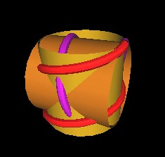
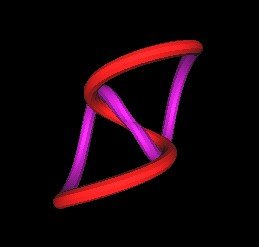

During the Sequoia II meeting, it was discovered that the Pattern knot could be formed by 2 interesting helices. Let's take a look at the details of this.
Here is an image of a helix.
And here is an image of the helix wrapped around a cylinder.
We adjust the parmeters of the helix (length, radius and number of cycles around the cylinder) for the Pattern Knot to be:
| Parameter | Value |
| Length | 2.0 |
| Radius | 1.0 |
| Cycles | 1.5 |
The Length and Radius have a ratio of 2:1. The Cycle (number of turns around the cylinder) is independent of the Length and Radius parameters.
Next, we create another helix at 90° to the first helix.
As you can see, the 2 helices are not connected. We join the 2 helices by rotating each one around their cylinder's axis.
So, here we have the combined helices and their intersecting cylinders.
Here are a few other perspectives of the helix-created Pattern Knot.
|
|
I will now develop the equations for the Pattern Knot based on these intersecting helices.
Lou Kauffman was the first to develop equations for the Pattern Knot formed by intersecting helices. See in particular his web page "A Double Helix Trefoil" by Louis H. Kauffman for his equations and for other illustrations.
First recall that there are 2 helices.
We consider 1 of these helices to be along the z-axis and centered at the coordinate origin. That is, half of its length is "above" (0,0,0) and half of its length is "below" (0,0,0) along the z-axis.
From the table of the Pattern Knot parameters above we see that the length of the helix is twice the radius. We will use the radius R and the Z coordinate for the parameters of the 1st helix equation.
The range of the Z parameter is
Now, the angular sweep of the helix is 1.5 cylces, which is (360°)(1.5).
We write an equation for the angle sweep for any Z parameter value between the Z parameter limits. We have
To check that this is what we want, we note that Theta(-R)=0 and Theta(+R)=(360°)(1.5), which is the entire angular sweep of the helix. So, the equation for Theta(Z) checks out.
We can now write the equation for the Z-axis helix part of the Pattern Knot:
| x1 = R*cos(Theta(Z)) |
| y1 = R*sin(Theta(Z)) |
| z1 = Z |
with
For the 2nd helix, along x-axis, the equations are
| x2 = X |
| y2 = -R*sin(Theta(X)) |
| z2 = R*cos(Theta(X)) |
with
Note that if we look at the vector functions
and calculate the derivative of these curves, we find that the 2 points where the 2 helices meet have different derivative values. This means that there is a kink along the Pattern Knot at these 2 points.
I calculate the derivatives to be (using 2PI instead of 360°):
v1'(Z) = -(3PI/2)sin(Theta(Z))x^ + (3PI/2)cos(Theta(Z))y^ + z^ v2'(X) = x^ -(3PI/2)cos(Theta(X))y^ - (3PI/2)sin(Theta(X))z^
where x^, y^, z^ are unit vetors in the x, y, z directions.
Evaluating at the intersecting points (limit values of Z and X) I get:
v1'(-R) = 0x^ + (3PI/2)y^ + z^
v1'(+R) = 0x^ - (3PI/2)y^ + z^
and
v2'(-R) = x^ - (3PI/2)y^ + 0z^
v2'(+R) = x^ + (3PI/2)y^ + 0z^
Clearly, v1' and v2' are not the same at the limit points (helix intersecting points).
So the intersection of 2 helices to form the Pattern Knot does not result in a smooth knot.
This is rather unsatisfying. It indicates that the formation of the Pattern Knot from intersecting helices may be a little "forced" and may not arise "naturally". However, the kinks at the intersecting points of the 2 helices could be "smoothed out". But then we are not dealing with "pure" helices.
From other studies, it is known that this knot can also be created by wraping a thread/ribbon/cylinder around a torus.
And it is known that any knot formed on a torus has a mirror complement knot. (I like "complement" better than "opposite".) One knot will be "right handed" while the other will be "left handed". And you can not simply (without cutting) deform one into the other.
We can create the mirror complement here by changing the "handedness" of the 2 helices. Note that we are not changing the cylinder orientation when we do this. We are simply changing the direction that the "ribbons" are wrapped around the cylinders.
In this figure, you can see that the red ribbon is wrapped around the cylinder (top to bottom) in a clockwise direction.
Here I have changed the direction of the red ribbon to be counter clockwise around the cylinder (top to bottom).
We do the same for the purple bibbon around the 2nd cylinder, changing from a clockwise wrap to a counter clockwise wrap.
|
Clockwise |
Counter Clockwise |
Here is the "complement" knot.
Here is a table showing clockwise and counter clockwise Pattern Knots.
|  | Clockwise | Counter Clockwise |
We next consider the possibility that instead of 2 intersecting cylinders, there are 4 intersection cones. The Pattern Knot is then formed by intersecting spirals.
| Intersecting Cylinders | Intersecting Cones |
Here is the development of the Pattern Knot on the cones.
|  |
The Pattern Knot on intersecting cones may represent flow lines of some substance spiraling in toward a center and spiraling out again. Two different axes at 90° are used.
Higher order knots (knots with more "loops") can also be generated on these cones. Here are some pictures in which I increased the number of cylces which the "ribbons" wrap around the cones.

|
Investigations are underway to determine if the Pattern Knot can be formed using 3 axes and 6 cones, 4 axes and 8 cones, etc.
Usage Note: My work is copyrighted. You may use my work but you may not include my work, or parts of it, in any for-profit project without my consent.